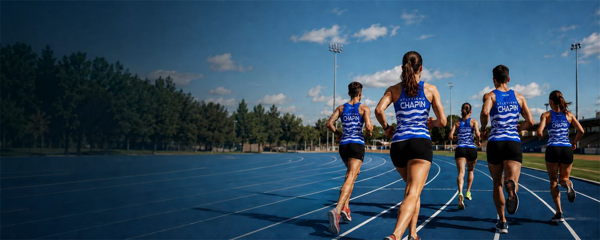
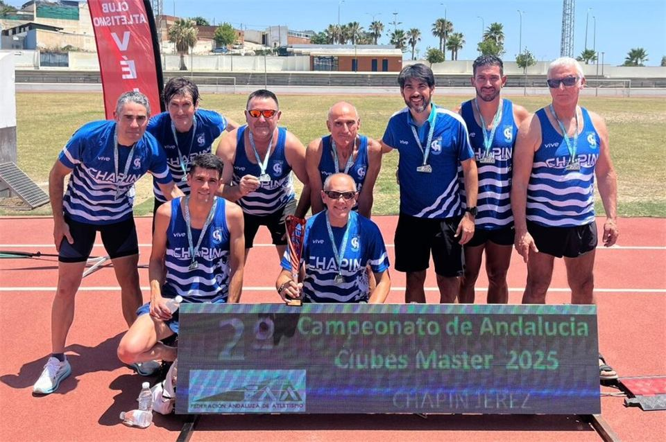
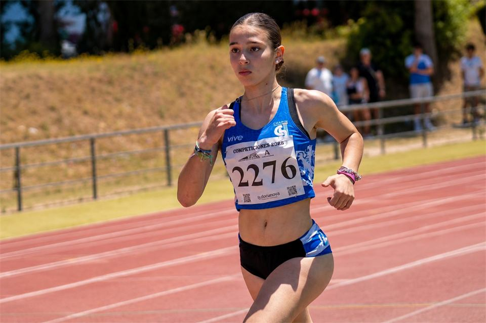
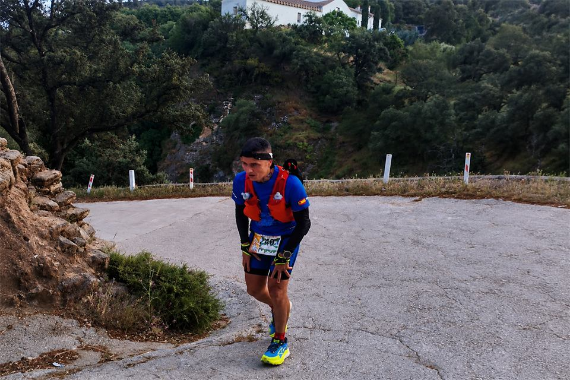
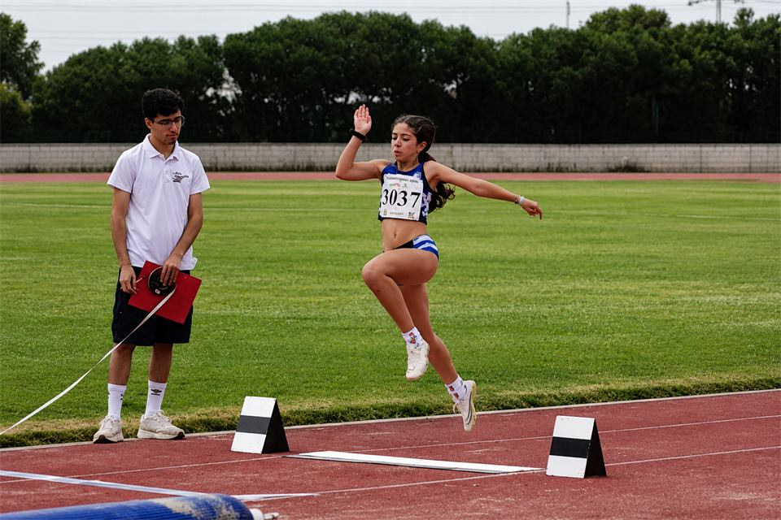
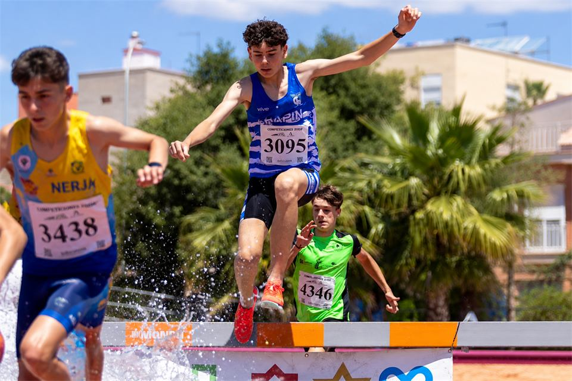

8
Ligas de clubes consecutivas
Campeón de España de la liga de clubes de División de Honor durante 8 temporadas consecutivas, de 2000-01 a 2007-08.

Club Atletismo Chapín Jerez
Formamos atletas, competimos al máximo y representamos nuestros valores en cada pista.
Lo que nos define
Entrenamientos profesionales y seguimiento personalizado.
Un grupo unido que impulsa tu mejor versión.
Participamos en las principales competiciones nacionales.
Respeto, esfuerzo, humildad y superación.

El club
El club de Atletismo Chapín Jerez nació con la ilusión de fomentar el atletismo en nuestra ciudad. Desde entonces, hemos formado a cientos de atletas que hoy compiten y representan nuestros colores con orgullo.
Conoce nuestra historia+100
Atletas federados
+100
Medallas al año
1989
Año de fundación
Jerez
De la Frontera
Entrenamientos
Desde el lunes 21 de septiembre entrenamos con el horario de invierno, en el Estadio Municipal de Chapín. Escuela de atletismo desde los 4 años hasta mayores.
Cada grupo entrena por edades. Si tienes dudas sobre qué grupo te corresponde, escríbenos o llámanos.
Palmarés
8
Campeón de España de la liga de clubes de División de Honor durante 8 temporadas consecutivas, de 2000-01 a 2007-08.
6
Galardonado como mejor club de España en categoría masculina entre las temporadas 2001-02 y 2006-07.
3
Campeón de la Copa del Rey en pista cubierta en 2001-02, 2002-03 y 2003-04.
2010
Campeón de España de media maratón en la temporada 2009-10 (Sagunto 2010).
Actualidad
Actualizaciones, competiciones y resultados del club.
Galería







Contacto
¿Estás buscando club? Ven, prueba y conócenos. Entrena con nosotros, conoce a nuestros atletas y entrenadores, y decide libremente. Si buscas el Club Atletismo Chapín, busca la camiseta azul.